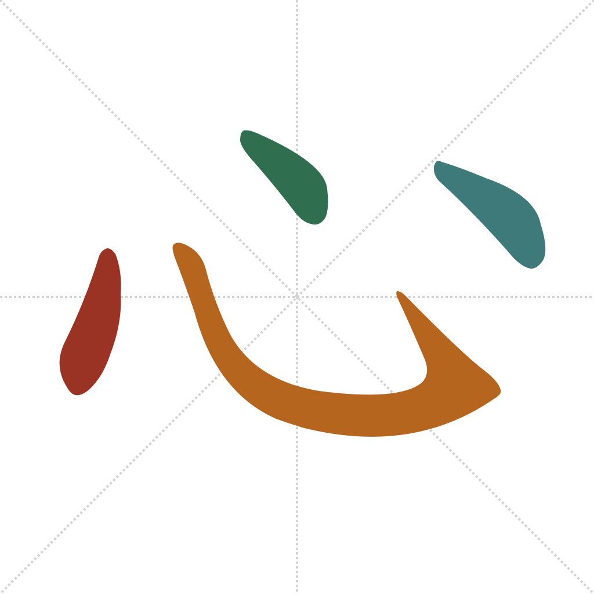
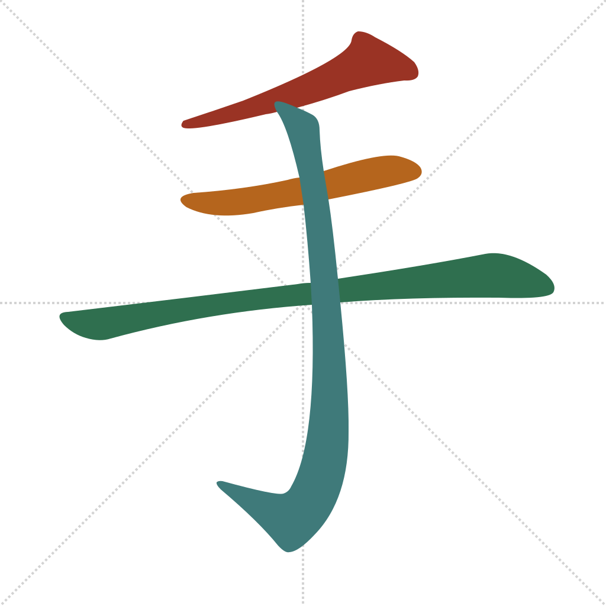

Lesson 11 · Foundational Components
手 and 心 are two of the most productive semantic components in the entire script. 手 sits inside most characters about physical action — hitting, holding, pulling, throwing. 心 sits inside most characters about emotion and mental states — thinking, worrying, loving, wanting. Both contract into a narrower left-side form when they combine with other pieces, so learning to recognize the contracted shape matters as much as the full character.
Quick recall — click each card to flip it:


打 pairs 扌 with a phonetic partner, the same pattern as 钱 in Lesson 10:
dǎ — to hit, to strike; also a general-purpose verb attached to many nouns to make a phrase, as in 打电话 (dǎ diànhuà, "to make a phone call") or 打篮球 (dǎ lánqiú, "to play basketball"). 扌 is the semantic element; 丁 (dīng, "nail" — also "robust male adult" and one of the ten Heavenly Stems) is phonetic only, named for accuracy and not entering the component pool. (Wiktionary: 打)
快 pairs 忄 the same way:
kuài — fast, quick; also pleased, happy. 忄 is the semantic element — speed and pleasure both routed through "heart" as the seat of response. 夬 (guài, "resolute; to part, to fork" — originally a pictograph of a hand wearing an archer's thumb ring) is phonetic here, not semantic; kuài and guài are close enough that the sound link is still audible today, the same situation as 戋/钱 in Lesson 10. 夬 is named for accuracy and isn't entering the component pool. (Wiktionary: 快)
忙 (máng, "busy," 忄+亡) follows the same pattern and is worth knowing on sight even without a full breakdown — it's one of the first words in almost any small-talk exchange, as in 帮忙 (bāngmáng, "to help, to do a favor").
Which component is a pictograph of a hand?
心 becomes which shape on the left side of a character, as in 忙 and 快?
In 打 (扌+丁), 丁 functions as:
快 (忄+夬) means:
Etymology sources for every character above are linked inline. For the rigorous version of any of them, see the Outlier Dictionary of Chinese Characters.
Out in the world: 打折 (dǎzhé, "to give a discount") is posted in the window of nearly every shop having a sale; 快餐 (kuàicān, "fast food") labels quick-service restaurants everywhere. Both use today's components in words you'll now be able to partly read even before you've been taught 折 or 餐.